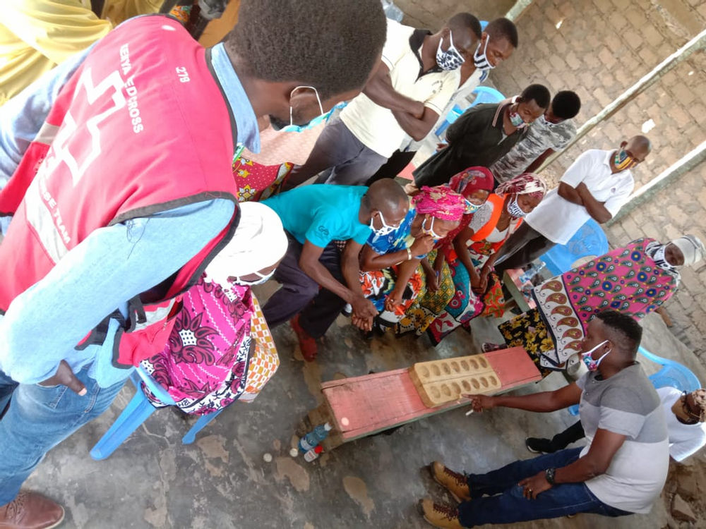

CIC Training from Response to Recovery
Response:

As support to vulnerable communities humanitarian organizations start by airdropping tokens to needy people in coordination with local authorities and village groups and elders, and facilitating periodic buy backs in Kenyan shillings (KSH) from those community groups. We also reward people with tokens for referring others and based on trading in network. The Sarafu token in Kenya is one such an aid-based Community Inclusion Currency (CIC) which is meant to bootstrap the creation of local CICs to be used toward recovery. Let’s call such an bootstrapping CIC (like Sarafu) ‘CIC_a’.
An aid program in Kenya has developed 16 Million Sarafu tokens in Kenya collateralize by 4 Million Kenyan Shillings ($40,000 USD) of a digital asset (DAI). (Note that CIC_a is collateralized by being bonded to a digital asset (DAI) using donor funds on a public blockchain – which can be extracted and used to create community based CIC, which we will discuss below. )
In vulnerable communities across Kenya anyone joining the network receives 400 Sarafu as well as additional Sarafu based on trade and referrals. Community groups receive additional donor funds for a limited amount of Sarafu (CIC_a) collected.
Note that using this technique alone in Kenya has produced more than 80 Million KSH ($800,000 USD) worth of trade in these communities so far. (the photo above is from Sarafu usage in Nairobi read more about it here.)

Recovery:
The community group is trained to use the digital assets bonded to CIC_a to create their own Community Inclusion Currency (CIC). They come up with a name, (Let’s call this new CIC, ‘CIC_b’) a vision and goals as well as community projects to be funded by their CIC_b. Note that there can be many community groups creating their own CICs (CIC_c ... d ... e, etc) depending on the scale of the CIC_a distribution. In Kenya the Sarafu distribution has reached over 27,000 household in dozens of communities so we expect many CICs to be created, while pulling out the digital assets from Sarafu. (the Photo on the left show a community discussion on projects tehy could fund with their own CIC)
The members of the community group pull the digital asset (valued in Kenyan Shillings) out of their CIC_a (destroying CIC_a) and place it into a new contract for CIC_b.
For each $1 Kenyan Shillings (KSH) (worth of digital assets pulled out of their CIC_a) placed in the new CIC_b contract, 4 CIC_b’s will be created. (Note that we require a minimum amount of collateral and a collateral to CIC_a ratio of 25% to start a CIC).
The community group then comes up with audited commitments to accept their payment for goods and services for CIC_b with 1:1 value to Kenyan shillings. They also develop rules for managing those commitments and local arbitration. i.e. one community member will agree to accepting 100 CIC_b a day for 100 KSH worth of day care for toddlers.

For each 1 CIC_b created there must be a commitment from the groups members to accepting 1 KSH worth of goods or services. Hence each CIC_b is 100% backed by commitments of local goods and services.
Eg. So for 400,000 CIC_b created, there is full backing in commitments by the community group as well as 100,000 KSH (~1,000 USD) worth of collateral. Based on community discussion, generally half of these 400,000 CIC_b’s go to the contributing members and the other half goes to voted-on community projects managed by agreed on community project managers. (the photo on the right shows Ruth Njau teaching trainers on the usage of a hatch board, recording commitments).
The photo here shows Roy Awaho from Kenya Red Cross and comunity members learning about Bonding Curves - which explains the diminishing returns from pulling out of their collateral fund - explained below and more in depth in our training materials.
Basic Usage:
Now that members of the community group have created their own CIC (CIC_b), they are now able to liquidate (cash out) their CIC_b against the collateral fund and receive Kenyan Shillings (via Mpesa eMoney). Each time they pull out of their collateral out it takes more CIC_b to pull out the same amount. For instance 1004 CIC_b (destroyed/liquidated) will pull out roughly 1000 KSH out of the collateral. After that it will take 1012 CIC_b to pull out 1000 KSH. After that it will take 1020 CIC_b to bull out 1000 KSH and so on.
This gives businesses some assurance that they can get Kenyan shillings when needed. As the amount of CIC_b to pull out KSH increases – there is an opportunity to add KSH back into the collateral pool. 1000 KSH in our last example added to the collateral would create 1020 CIC_b’s and as long as the community group is holding their commitments there is an advantage to doing so – in order to buy local products. This market effect stabilizes the exchange value.
Impact investors and aid organizations can also support communities by adding to the collateral pool and minting CIC_b’s. Just by doing so they increase the exchange value of CIC_b. This is like an investment into the economy of CIC_b users. The CIC_b’s created in the process can be donated to needy community members as well.
Giving humanitarian organizations a way to respond to crisis and seed resilient economies is at the heart of CICs. The end effect is that communities have a way to create their own credit systems for supporting themselves responsibly with both social and hard collateral.